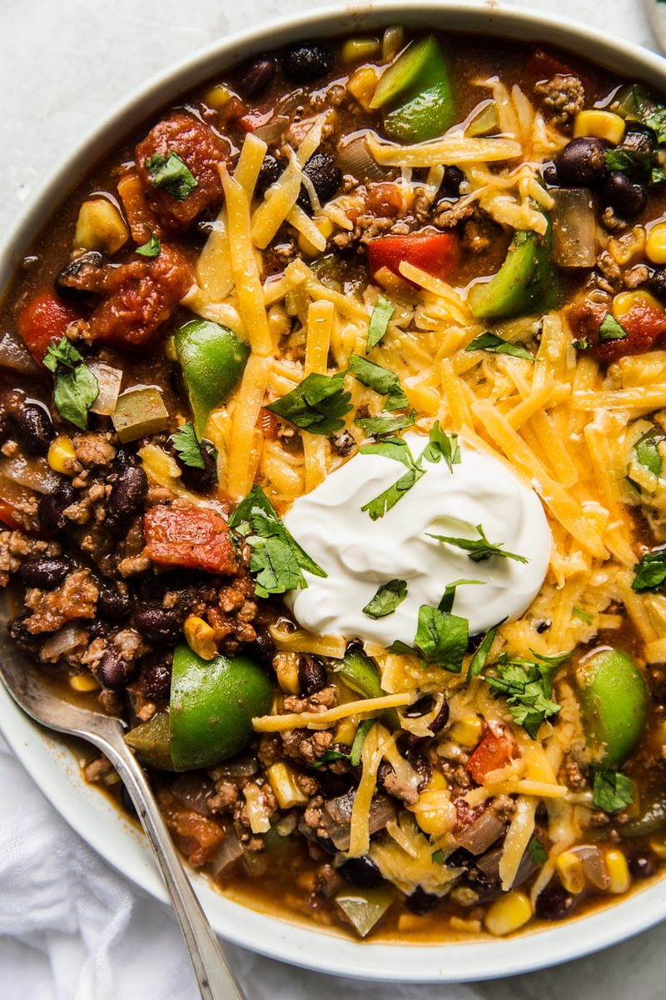

Taco Soup

Taco night, but make it soup! Our taco soup recipe features all of the standard taco fixings, including ground beef flavored with our homemade taco seasoning. Don’t forget the toppings!
· · · Method · · ·
1 poundground beef1yellow onion, diced1 (4-ounce) cangreen chilies2-3 cupschicken stock1 (28-ounce) cantomatoes diced3 tblsp (1 pack)taco seasoning2 (14-ounce) cansblack beans (or other types), drained1 cupfrozen corn2-3bell peppers (green, red), diced- Salt to taste
Place the beef and onion in a large soup pot over medium-high heat. Cook, breaking up the meat with a spoon, until the meat is browned, about 8 minutes.
Add the green chilies, chicken stock, diced tomatoes, taco seasoning, black beans, corn, and bell peppers. Bring the soup to a boil, then reduce the heat to medium low and simmer, stirring occasionally, for 30 minutes.
- Shredded cheddar cheese
- Sour cream
- Fresh cilantro
- Sliced green onions
- Diced avocado
Serve the soup in bowls topped with any toppings of your choice, as desired.